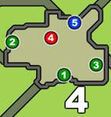

|
맵의 특징
- 에리어6에 비경이 있음
- 에리어7부터 에리어6으로의 일방통행로가 있다.
베이스 캠프
| 위치 | 종별 | 촌장 / 집회욕장 하위 |
집회욕장 상위 |
훈련소 | |
|---|---|---|---|---|---|
| ① | 낚시 | 전갱이 횟감용생선 튀는정어리 파열아로와나 폭렬아로와나 소금어 |
횟감용생선 전갱이 튀는정어리 파열아로와나 폭렬아로와나 소금어 |
에리어1
| 위치 | 종별 | 촌장 / 집회욕장 하위 |
집회욕장 상위 |
훈련소 | |
|---|---|---|---|---|---|
| ① (붉은 꽃) |
채취 | 해독초 점착초 담쟁이잎 녹색씨 |
해독초 점착초 담쟁이잎 녹색씨 |
||
| ② (푸른 꽃) |
채취 | 약초 서리풀 수면초 |
약초 서리풀 수면초 |
||
| ③ (버섯) |
채취 | 푸른버섯 마비버섯 두근두근버섯 특산버섯 |
푸른버섯 두근두근버섯 마비버섯 특산버섯 엄선버섯 |
||
| ④ | 채굴 | 철광석 대지의결정 시브라이트광석 수광원주 황금석파편 |
철광석 대지의결정 시브라이트광석 뎁스라이트광석 양상원주 황금석파편 황금석덩이 |
에리어2
| 위치 | 종별 | 촌장 / 집회욕장 하위 |
집회욕장 상위 |
훈련소 | |
|---|---|---|---|---|---|
| ① (버섯) |
채취 | 마비버섯 두근두근버섯 특산버섯 |
마비버섯 두근두근버섯 특산버섯 엄선버섯 |
||
| ② (풀) |
채취 | 낚시지렁이 숫돌 자갈 |
낚시지렁이 숫돌 자갈 |
||
| ③ (열매) |
채취 | 인내의씨 속빈열매x5 속빈열매x10 가시열매x4 가시열매x8 |
인내의씨 속빈열매x5 속빈열매x10 가시열매x4 가시열매x8 |
||
| ④ (열매) |
채취 | 괴력의씨 속빈열매x10 속빈열매x5 가시열매x4 가시열매x8 |
괴력의씨 속빈열매x10 속빈열매x5 가시열매x4 가시열매x8 |
||
| ⑤ | 곤충망 | 쓴벌레 불사충 광충 뇌광충 반짝투구벌레 로얄투구벌레 |
불사충 광충 뇌광충 반짝투구벌레 왕족풍뎅이 로얄투구벌레 갓투구벌레 |
에리어3
| 위치 | 종별 | 촌장 / 집회욕장 하위 |
집회욕장 상위 |
훈련소 | |
|---|---|---|---|---|---|
| ① (풀) |
채취 | 해독초 점착초 담쟁이잎 |
해독초 점착초 담쟁이잎 |
||
| ② (거미줄) |
채취 | 죽은벌레 거미줄 낚시용파리미끼 |
죽은벌레 거미줄 낚시용파리미끼 |
||
| ③ (푸른 꽃) |
채취 | 해독초 점착초 담쟁이잎 녹색씨 |
해독초 점착초 담쟁이잎 녹색씨 |
||
| ④ (덩굴과 폭포의 석벽) |
채굴 | 숫돌 철광석 대지의결정 마카라이트광석 시브라이트광석 황금석파편 |
철광석 마카라이트광석 시브라이트광석 뎁스라이트광석 수라원주 황금석파편 황금석덩이 |
에리어4
|  | 위치 | 종별 | 촌장 / 집회욕장 하위 |
집회욕장 상위 |
훈련소 |
|---|---|---|---|---|---|
| ① (흰 꽃) |
채취 | 약초 서리풀 수면초 |
약초 서리풀 수면초 |
||
| ② (보라색 버섯) |
채취 | 니트로버섯 독버섯 특산버섯 |
니트로버섯 독버섯 특산버섯 엄선버섯 |
||
| ③ (푸른 꽃) |
채취 | 해독초 점착초 담쟁이잎 |
해독초 점착초 담쟁이잎 |
||
| ④ | 곤충망 | 쓴벌레 불사충 광충 낚시용파리미끼 반짝투구벌레 로얄투구벌레 |
쓴벌레 광충 불사충 반짝투구벌레 도스헤라클레스 왕족풍뎅이 로얄투구벌레 갓투구벌레 |
||
| ⑤ | 낚시 | 횟감용생선 확산툭눈붕어 파열아로와나 폭렬아로와나 소금어 황금어 |
횟감용생선 확산툭눈붕어 폭렬아로와나 소금어 황금어 백금어 고대어 |
에리어5
 |
위치 | 종별 | 촌장 / 집회욕장 하위 |
집회욕장 상위 |
훈련소 |
|---|---|---|---|---|---|
| ① (붉은 꽃) |
채취 | 약초 수면초 점착초 |
약초 수면초 점착초 |
||
| ② (자갈) |
채취 | 낚시지렁이 자갈 |
낚시지렁이 자갈 |
||
| ③ (뼈) |
채취 | 척추뼈x5 봉형의뼈 의문의뼈 |
척추뼈x5 봉형의뼈 의문의뼈 |
||
| ④ | 채굴 | 자갈 철광석 마카라이트광석 베어라이트광석 수광원주 |
자갈 철광석 베어라이트광석 카브레라이트광석 수광원주 수라원주 의문의부적×2 |
||
| ⑤ (그루터기 위) |
곤충망 | 죽은벌레 쓴벌레 광충 폭탄메뚜기 반짝투구벌레 로얄투구벌레 |
쓴벌레 광충 폭탄메뚜기 반짝투구벌레 왕족풍뎅이 로얄투구벌레 갓투구벌레 |
※ 포인트 5의 그루터기는 대형 몬스터의 공격으로 파괴되며, 파괴 후에는 채취 불가능.
에리어6
| 위치 | 종별 | 촌장 / 집회욕장 하위 |
집회욕장 상위 |
훈련소 | |
|---|---|---|---|---|---|
| ① (자갈) |
채취 | 자갈 자갈×2 숫돌 |
자갈 자갈×2 숫돌 |
||
| ② | 채굴 | 철광석 대지의결정 시브라이트광석 수광원주 |
대지의결정 시브라이트광석 뎁스라이트광석 양상원주 수라원주 |
||
| ③ | 채굴 | 철광석 마카라이트광석 대지의결정 베어라이트광석 황금석파편 자갈 |
철광석 대지의결정 베어라이트광석 카브레라이트광석 자갈 수라원주 의문의부적x2 황금석파편 황금석덩이 |
||
| ④ (비경) |
곤충망 | － | 광충 뇌광충 불사충 도스헤라클레스 왕족풍뎅이 갓투구벌레 로얄투구벌레 |
||
| ⑤ (비경) |
채굴 | － | 시브라이트광석 뎁스라이트광석 견무구옥 녹슨덩이 황금석파편 황금석덩이 수라원주 의문의부적×2 빛나는부적 |
에리어7
| 위치 | 종별 | 촌장 / 집회욕장 하위 |
집회욕장 상위 |
훈련소 | |
|---|---|---|---|---|---|
| ① (흰 벌집) |
채취 | 죽은벌레 벌꿀 땅말벌유충 |
죽은벌레 벌꿀 땅말벌유충 |
||
| ② (열매) |
채취 | 괴력의씨 확산열매 인내의씨 툭터지는호두 |
괴력의씨 확산열매 인내의씨 툭터지는호두 |
||
| ③ | 곤충망 | 불사충 광충 뇌광충 폭탄메뚜기 반짝투구벌레 로얄투구벌레 |
광충 뇌광충 폭탄메뚜기 도스헤라클레스 반짝투구벌레 왕족풍뎅이 로얄투구벌레 갓투구벌레 |
||
| ④ (열매-북동) |
채취 | 페인트열매 가시열매x4 가시열매x8 |
페인트열매 가시열매x4 가시열매x8 |
에리어8
| 위치 | 종별 | 촌장 / 집회욕장 하위 |
집회욕장 상위 |
훈련소 | |
|---|---|---|---|---|---|
| ① (버섯) |
채취 | 푸른버섯 마비버섯 독버섯 특산버섯 |
푸른버섯 마비버섯 독버섯 엄선버섯 |
||
| ② (용의 둥지) |
채취 | 의문의뼈 봉형의뼈 용의알 |
의문의뼈 봉형의뼈 용의알 |
||
| ③ | 채굴 | 철광석 마카라이트광석 대지의결정 베어라이트광석 숫돌 |
마카라이트광석 베어라이트광석 카브레라이트광석 대지의결정 빛나는부적 수라원주 |
||
| ④ | 채굴 | 철광석 대지의결정 마카라이트광석 수광원주 베어라이트광석 황금석파편 |
철광석 수라원주 대지의결정 베어라이트광석 수광원주 의문의부적x2 황금석파편 황금석덩이 |
에리어9
| 위치 | 종별 | 촌장 / 집회욕장 하위 |
집회욕장 상위 |
훈련소 | |
|---|---|---|---|---|---|
| ① (꽃) |
채취 | 약초 페인트열매 툭터지는호두 |
약초 페인트열매 툭터지는호두 |
||
| ② (버섯) |
채취 | 푸른버섯 니트로버섯 독버섯 특산버섯 |
푸른버섯 니트로버섯 독버섯 엄선버섯 |
||
| ③ | 곤충망 | 죽은벌레 불사충 뇌광충 낚시용파리미끼 반짝투구벌레 |
죽은벌레 불사충 뇌광충 낚시용파리미끼 반짝투구벌레 도스헤라클레스 왕족풍뎅이 |
에리어10
| 위치 | 종별 | 촌장 / 집회욕장 하위 |
집회욕장 상위 |
훈련소 | |
|---|---|---|---|---|---|
| ① (뼈) |
채취 | 봉형의뼈 의문의뼈 의문의두골 용골【소】 |
봉형의뼈 의문의뼈 의문의두골 용골【소】 |
||
| ② (용의 둥지) |
채취 | 척추뼈x5 봉형의뼈 의문의뼈 용의알 |
척추뼈x5 봉형의뼈 의문의뼈 용의알 |
||
| ③ (똥) |
채취 | 몬스터배설물 몬스터배설물x2 용배설물 용골【소】 |
몬스터배설물 몬스터배설물x2 용배설물 용골【소】 |
||
| ④ | 채굴 | 숫돌 철광석 마카라이트광석 대지의결정 베어라이트광석 황금석파편 |
숫돌 대지의결정 베어라이트광석 카브레라이트광석 수라원주 양상원주 빛나는부적 녹슨덩이 황금석덩이 |
||
| ⑤ | 곤충망 | 죽은벌레 쓴벌레 광충 폭탄메뚜기 로얄투구벌레 |
쓴벌레 광충 폭탄메뚜기 왕족풍뎅이 로얄투구벌레 갓투구벌레 |